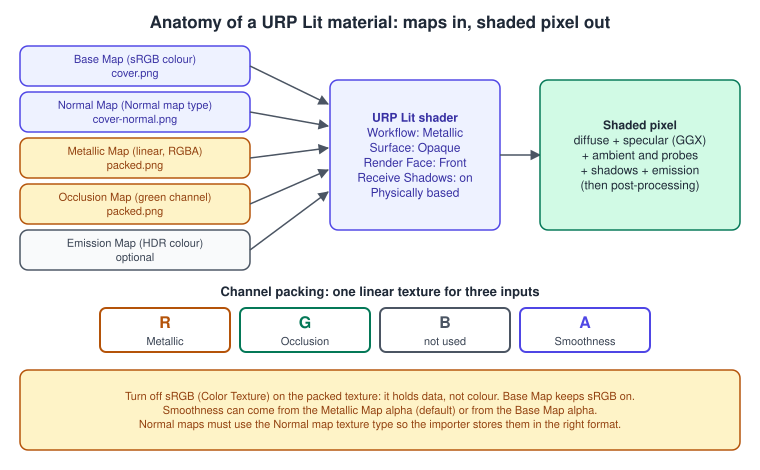
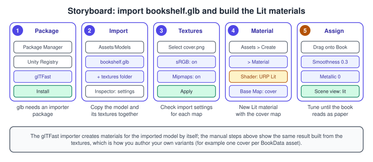
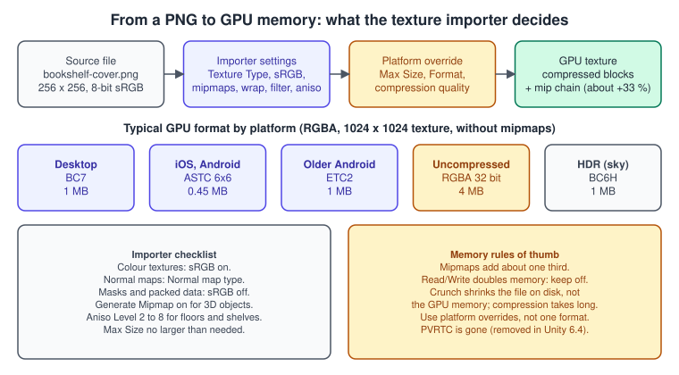
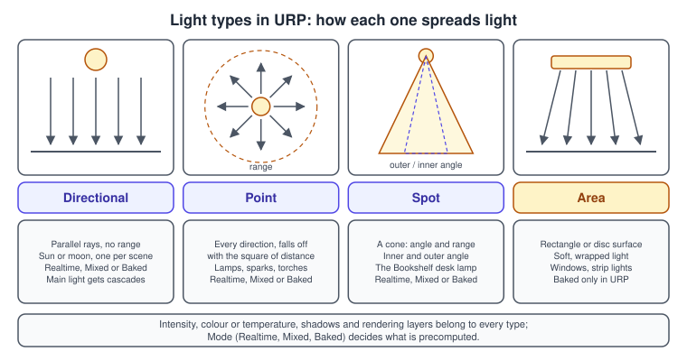
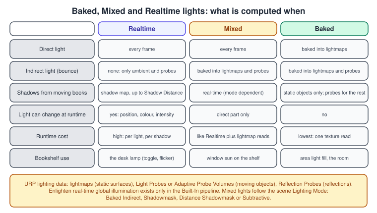
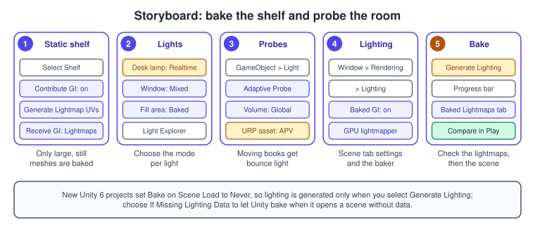

Materials, Textures and Lighting
|
This content was generated with the assistance of AI and should be verified against the official documentation before being relied on in production. |
How a scene looks in Unity is decided by three things that you author separately and that meet in the shader: the material (which shader runs and with what values), the textures (images that feed the shader) and the lights (what the shader reacts to). The Bookshelf needs all three: books with a paper cover, a spine and page edges; a wooden shelf; a desk lamp that you can switch on and off; and a room that is lit well enough to need no more than one real-time light. This page builds that look with the Universal Render Pipeline (URP), explains every setting you will touch, and shows how to change materials and lights from scripts.
The facts were checked in November 2026. The page documents Unity 6.3 LTS (6000.3, URP 17.3). Where later releases change something, it is marked: Unity 6.5 (the Built-In Render Pipeline becomes deprecated) and Unity 6.6 (a new light baker, deprecation of the CPU lightmapper).
The Bookshelf project uses the Universal 3D template and the shared model bookshelf.glb (a shelf of six boards and nine books that share one mesh and the materials Cover, Spine, Pages and Wood, with embedded textures); the
PNG textures are in the same attachments folder, and a reader who wants KTX2 versions produces them with the toktx or ktx create tools. The theory behind this page is in
Lighting and Shading Models, Textures, Sampling and Mipmaps,
Shadows and Global Illumination and Color Spaces, HDR and Tone Mapping.
The pipeline settings that these assets feed are on URP in Depth.
Materials and shaders in URP
A material is an asset that stores which shader to run and the values of that shader’s properties (colours, numbers, textures). A shader is the program. Many materials can share one shader, and that is what makes batching cheap. URP ships prebuilt shaders for the usual jobs, and one of them, Lit, covers most real-world surfaces.
| Shader | Shading model and use | Cost |
|---|---|---|
Lit |
physically based; stone, wood, paper, plastic, metal, glass |
the heaviest standard model |
Complex Lit |
everything Lit does plus advanced features such as a clear coat; rendered with the Forward path even in Deferred |
needs shader model 4.5 |
Simple Lit |
non-physically based (Blinn-Phong style), energy is not conserved; a helper for converting old non-PBR projects |
cheap; not supported by Shader Graph |
Baked Lit |
no real-time lighting, only lightmaps and Light Probes |
very cheap; stylised or fully baked scenes |
Unlit |
no lighting at all; effects, UI-like surfaces, debug |
cheapest, fastest to compile |
What "physically based" means here
The Lit shader follows two ideas. Energy conservation: a surface never reflects more light than it receives (an emitting surface is the exception). Microgeometry: every surface is rough at a tiny scale, so a smooth surface reflects a sharp mirror image and a rough one reflects a wide, dull highlight. The shape of the highlight is approximated with a GGX function, and metals and non-metals (dielectrics) are treated differently: a metal absorbs and tints the light it reflects, while a dielectric reflects part of the light and diffuses the rest. Light attenuation depends only on the light’s intensity, so you do not tune a "range" to control how fast the light fades. For a point source the fall-off follows the inverse square law:
\[ E = \frac{ I }{ d^2 } \]
where \( E \) is the illuminance on a surface facing the light, \( I \) the intensity and \( d \) the distance. Doubling the distance quarters the light. The general derivations are on Lighting and Shading Models.
The Lit material, input by input

The Lit material Inspector has four groups.
Surface Options control how the material is rendered:
| Property | Meaning |
|---|---|
Workflow Mode |
Metallic (a metallic value defines how much of the surface behaves like metal) or Specular (a specular colour defines the reflections of non-metals); affects batching |
Surface Type |
Opaque (drawn first) or Transparent (blended in a later pass); a transparent material has Blending Mode Alpha, Premultiply, Additive or Multiply |
Render Face |
Front (default), Back or Both |
Alpha Clipping and Threshold |
discards pixels below the threshold (default 0.5); hard edges for grass or a cut-out label |
Receive Shadows |
whether the material shows shadows from other objects |
Surface Inputs describe the surface:
| Property | Meaning |
|---|---|
Base Map |
the surface colour (albedo), a colour texture and/or a tint colour; its alpha is the transparency if enabled |
Metallic Map |
0 for plastic, wood and paper, 1 for silver; in the Metallic workflow |
Smoothness |
0 to 1, a wide rough highlight to a small sharp one; its Source is the Metallic Map alpha (default) or the Base Map alpha |
Normal Map |
adds bumps and grooves without geometry, with a strength slider |
Height Map |
the appearance of large bumps (parallax) |
Occlusion Map |
darkens corners and crevices |
Emission and Emission Map |
the surface emits colour; set an HDR intensity in the colour picker for glow brighter than white; Global Illumination decides if baked lighting uses it (Baked or None) |
Tiling and Offset |
how the maps repeat and shift over the UVs |
Detail Inputs overlay a second, more detailed Base Map and Normal Map through a mask. Advanced Options hold Specular Highlights, Environment Reflections, Sorting Priority (render order of materials), Enable GPU Instancing and the motion-vector options for Alembic and XR. Several of these features are implemented as shader variants that need more SRP Batcher batches, so URP’s reference advises disabling the ones you do not use.
Channel-packed textures
Metallic, occlusion and smoothness are three greyscale values. Packing them into one RGBA texture saves two texture reads and memory: red is Metallic, green is Occlusion, blue is not used and alpha is Smoothness. Import the packed texture with sRGB (Color Texture) turned off, because it holds data and not colour, then assign it to both the Metallic and the Occlusion property; Unity uses the right channel of each.
Importing the model and building materials
glTF binary files (.glb) are not imported by the editor on its own: Unity’s glTFast package (com.unity.cloud.gltfast) registers itself as the default importer for the .gltf and .glb extensions. It imports the file as native prefabs with meshes, materials, textures and animation clips.
If a model comes with companion .bin and image files, copy them with it and keep their names and relative paths.

-
Open Window > Package Management > Package Manager, choose Unity Registry, search for glTFast (package name
com.unity.cloud.gltfast) and select Install. -
Download bookshelf.glb and drag it into a folder of the Project window (for example
Assets/Models). Select it to see its import settings; expand it to see the imported meshes, materials and textures. -
Select a texture (for example the cover) and check its import settings in the Inspector: sRGB (Color Texture) on for colour, Generate Mipmap on; select Apply after any change.
-
Create your own material with Assets > Create > Material. In the new material’s Inspector choose the Universal Render Pipeline > Lit shader and assign the cover texture to Base Map.
-
Drag the material onto the book in the Scene view, then adjust Smoothness (paper is rough, around 0.3) and Metallic (0 for paper) until the book reads as paper under the lamp.
The imported materials already work. Authoring your own matters when the same mesh needs several looks: one cover per BookData asset, with the other inputs shared. Unity’s Material Variants hold the shared inputs in a parent material and store only the differences in each variant, which keeps hundreds of covers manageable
(see ScriptableObjects and Data-Driven Design for the data side).
Source: Unity Manual: Material Variants
Upgrading Built-In materials
A material that uses a Built-In shader (such as Standard) renders magenta in URP, because the shader has no URP passes. The Render Pipeline Converter converts prebuilt materials to URP materials, but not materials with custom shaders, and it makes irreversible changes, so back up the project first. For custom shaders, port the shader to URP or rebuild it in Shader Graph (Shader Graph and HLSL).
Texture import and compression
A texture asset is not the image file: it is what the importer builds from it. The Texture Import Settings window decides the type, shape, size, format and filtering of the texture that ends up on the GPU.

Texture type and shape
The Texture Type chooses what the importer does to the image: Default (colour and general use), Normal map (stores it in the format normal mapping needs), Editor GUI and Legacy GUI, Sprite (2D and UI), Cursor, Cookie, Lightmap, Directional Lightmap, Shadowmask and Single Channel. Texture Shape is 2D, Cube (a cubemap, for skyboxes and reflection probes), 2D Array (many same-sized textures, as an optimisation) or 3D (volumetric data).
The Default type settings
| Property | Meaning |
|---|---|
sRGB (Color Texture) |
the texture is in gamma space: on for albedo and other colour, off for data that needs exact values (masks, packed textures, normal-related data) |
Alpha Source, Alpha is Transparency |
where the alpha channel comes from, and whether to dilate colour at transparent edges to avoid halos |
Non Power of 2 |
how to scale textures whose size is not a power of two |
Read/Write |
lets scripts read pixels, but doubles the texture’s memory, so it is off by default; since Unity 6.5, Particle System shape and terrain detail features that need CPU-readable textures require you to enable it explicitly, because Unity no longer enables it at build time |
Generate Mipmap |
builds the chain of half-size images used for distant surfaces; costs about a third more memory, saves bandwidth and removes shimmer |
Stream Mipmap Levels, Priority |
Mipmap Streaming: load only the mip levels the camera needs |
Mipmap Filtering |
Box (smoother) or Kaiser (sharpened) |
Preserve Coverage, Alpha Cutoff |
keeps the alpha-tested area stable across mip levels (foliage, cut-outs) |
Wrap Mode |
Repeat, Clamp, Mirror, Mirror Once or per axis |
Filter Mode |
Point, Bilinear or Trilinear |
Aniso Level |
quality at steep viewing angles, for floors and shelf boards; costs bandwidth |
Size, format and compression by platform
The lower part of the window holds a Default tab and one tab per platform. Max Size limits the dimensions; Resize Algorithm is Mitchell or Bilinear; Format is Automatic by default, in which case the Compression setting (None, Low Quality, Normal Quality, High Quality) picks a format; Use Crunch Compression adds on-disk compression that decompresses on the CPU at load (it shrinks the download, not the GPU memory) and can take long to compress. A platform tab overrides the default for that platform.
GPUs read compressed blocks directly, so a compressed texture uses a fraction of the memory and bandwidth. The recommended choices are:
| Platform | Recommended format |
|---|---|
Desktop (DirectX 11-class GPUs and later) |
RGB: DXT1 (BC1) at 4 bits per pixel; RGBA: BC7 (higher quality, slower to compress) or DXT5 (BC3, faster to compress), both at 8 bits per pixel; HDR: BC6H at 8 bits per pixel |
iOS and tvOS (A8 chip or later) |
ASTC for RGB and RGBA, from 8 bits per pixel (4x4 blocks) down to 0.89 (12x12 blocks); ETC2 for older devices |
Android |
ASTC on modern GPUs that support OpenGL ES 3.1 or Vulkan; ETC2 for older ones; ASTC HDR is the only compressed HDR format; choose the default in Player Settings |
For a 1024 by 1024 texture the GPU memory is 4 MB as uncompressed RGBA 32 bit, 1 MB as BC7 or RGBA ETC2, 0.5 MB as DXT1, and between 0.11 and 1 MB as ASTC depending on the block size (0.45 MB at 6x6). Mipmaps add about a third. The Bookshelf textures are small (256 by 256 for the cover and the wood, 64 by 256 for the spine and the pages), so on the shelf the choice matters little; for a library of cover images loaded at runtime, or for a 500-book scene, it decides memory. Texture compression for the Web build is on Web and WebGPU.
Changing materials from a script
Every material property is reachable from C#: SetColor, SetFloat, SetInteger and SetTexture, using the property’s name or a numeric ID. These methods set only properties that the current shader has, so a typo or a missing shader does nothing and gives no error.
For URP Lit, the names you need are _BaseColor, _BaseMap, _Metallic, _Smoothness and _EmissionColor (and the _EMISSION keyword). Cache Shader.PropertyToID results in static fields: it is cheaper than passing a string every frame.
There are two ways to change a value for one renderer, and they differ in cost:
-
Renderer.materialreturns a copy of the material for that renderer, creating it on first use. You can change anything, but each copy is a separate object, you must destroy it yourself, and many unique materials give the SRP Batcher many more batches to process. -
A
MaterialPropertyBlockoverrides values for one renderer without copying the material, which keeps the materials shared. It is cheap, but it does not work with the GPU Resident Drawer: a renderer that uses it is not drawn by the Drawer (see URP in Depth).
The script below tints a book’s cover with the BookData colour using a property block, and optionally makes the spine glow with an instanced material. It is the script for the "hover" effect of the Bookshelf, in a form that you can use without the GPU Resident Drawer.
using UnityEngine;
namespace Bookshelf.Rendering
{
/// <summary>
/// Applies a cover tint and an optional emission glow to a book's renderer.
/// The tint uses a MaterialPropertyBlock (the material stays shared);
/// the glow uses a material instance, because emission needs a shader keyword.
/// </summary>
[RequireComponent(typeof(Renderer))]
public sealed class BookMaterialController : MonoBehaviour
{
private static readonly int BaseColorId = Shader.PropertyToID("_BaseColor");
private static readonly int SmoothnessId = Shader.PropertyToID("_Smoothness");
private static readonly int EmissionColorId = Shader.PropertyToID("_EmissionColor");
private const string EmissionKeyword = "_EMISSION";
[SerializeField] private Color coverTint = Color.white;
[SerializeField, Range(0f, 1f)] private float smoothness = 0.3f;
[SerializeField, ColorUsage(showAlpha: false, hdr: true)] private Color glowColor = new Color(1f, 0.7f, 0.2f) * 2f;
private Renderer bookRenderer;
private MaterialPropertyBlock block;
private Material glowInstance;
private void Awake()
{
bookRenderer = GetComponent<Renderer>();
block = new MaterialPropertyBlock();
ApplyTint();
}
private void OnValidate()
{
// Keep the Scene view in sync while editing the serialized fields.
if (bookRenderer == null) bookRenderer = GetComponent<Renderer>();
if (block == null) block = new MaterialPropertyBlock();
ApplyTint();
}
private void OnDestroy()
{
// A material created by Renderer.material is ours to destroy.
if (glowInstance != null) Destroy(glowInstance);
}
public void ApplyTint()
{
bookRenderer.GetPropertyBlock(block);
block.SetColor(BaseColorId, coverTint);
block.SetFloat(SmoothnessId, smoothness);
bookRenderer.SetPropertyBlock(block);
}
public void SetGlow(bool on)
{
// Renderer.material makes a unique copy the first time it is read.
if (glowInstance == null) glowInstance = bookRenderer.material;
if (on)
{
glowInstance.EnableKeyword(EmissionKeyword);
glowInstance.SetColor(EmissionColorId, glowColor);
}
else
{
glowInstance.DisableKeyword(EmissionKeyword);
glowInstance.SetColor(EmissionColorId, Color.black);
}
}
}
}Lights
A Light component is a source of illumination. In URP the Inspector groups its properties into General, Shape, Emission, Rendering and Shadows.

-
Directional lights are infinitely far away: parallel rays, no fall-off. Use one for the sun or the moon. A new scene has one by default, and the default procedural sky follows its rotation. URP treats the brightest directional light as the main light unless you assign a Sun Source.
-
Point lights shine in all directions from a point and fade to zero at their Range. Lamps, sparks, a torch.
-
Spot lights shine in a cone with an Inner and Outer Spot Angle. The Bookshelf desk lamp is a spot light. Avoid very large outer angles (above about 160 degrees): the shadow map is spread over a large area and the shadow quality drops.
-
Area lights emit from a rectangle or a disc, one side only, giving soft, wrapped light. In URP an area light is always Baked, and light cookies are not supported on them.
The other properties:
| Property | Meaning |
|---|---|
Mode |
Realtime, Mixed or Baked: how much is precomputed (see the next section) |
Rendering Layers |
which rendering layers the light applies to (Realtime and Mixed lights); needs Use Rendering Layers in the URP asset |
Light Appearance, Color, Temperature |
a colour, or a filter colour plus a temperature in kelvin |
Intensity, Indirect Multiplier |
brightness of the light, and of the bounced light that the baked or probe lighting gets from it |
Range |
how far a point or spot light reaches |
Cookie |
a texture projected by the light (2D for directional and spot, a cubemap for point), to make window shapes or foliage shadows |
Culling Mask |
which layers the light affects |
Shadow Type |
No Shadows, Hard Shadows or Soft Shadows, with Strength and bias settings under Realtime Shadows |
Source: Unity Manual: Light component Inspector window reference for URP, Unity Manual: Types of Light component
The desk lamp is the one dynamic light of the Bookshelf, so it gets a script. It toggles, flickers a little, and drives the lamp shade’s emission so that the lit bulb looks lit:
using UnityEngine;
namespace Bookshelf.Rendering
{
/// <summary>
/// Desk lamp: a Spot Light (Mode: Realtime) plus an emissive shade.
/// Call Toggle from the Input System action that handles "Use lamp".
/// </summary>
[RequireComponent(typeof(Light))]
public sealed class DeskLamp : MonoBehaviour
{
private static readonly int EmissionColorId = Shader.PropertyToID("_EmissionColor");
private const string EmissionKeyword = "_EMISSION";
[SerializeField] private Renderer shadeRenderer;
[SerializeField, Min(0f)] private float baseIntensity = 3f;
[SerializeField, Range(0f, 0.5f)] private float flickerAmount = 0.05f;
[SerializeField, Min(0.1f)] private float flickerSpeed = 3f;
[SerializeField, ColorUsage(showAlpha: false, hdr: true)] private Color shadeEmission = new Color(1f, 0.75f, 0.35f) * 2.5f;
[SerializeField, Range(1000f, 10000f)] private float temperatureKelvin = 3000f;
private Light lamp;
private Material shadeMaterial;
private bool isOn = true;
public bool IsOn => isOn;
private void Awake()
{
lamp = GetComponent<Light>();
lamp.type = LightType.Spot;
lamp.shadows = LightShadows.Soft;
lamp.useColorTemperature = true;
lamp.colorTemperature = temperatureKelvin;
if (shadeRenderer != null)
{
// A unique instance, so the emission of other lamps is not affected.
shadeMaterial = shadeRenderer.material;
}
Apply();
}
private void OnDestroy()
{
if (shadeMaterial != null) Destroy(shadeMaterial);
}
private void Update()
{
if (!isOn) return;
// Perlin noise gives a slow, smooth variation, not white noise.
float noise = Mathf.PerlinNoise(Time.time * flickerSpeed, 0.37f) - 0.5f;
lamp.intensity = baseIntensity * (1f + noise * 2f * flickerAmount);
}
public void Toggle() => SetOn(!isOn);
public void SetOn(bool on)
{
isOn = on;
Apply();
}
private void Apply()
{
lamp.enabled = isOn;
if (!isOn) lamp.intensity = 0f; else lamp.intensity = baseIntensity;
if (shadeMaterial == null) return;
if (isOn)
{
shadeMaterial.EnableKeyword(EmissionKeyword);
shadeMaterial.SetColor(EmissionColorId, shadeEmission);
}
else
{
shadeMaterial.SetColor(EmissionColorId, Color.black);
}
}
}
}Source: Unity Scripting API: Light
A lamp that is switched at runtime must be a Realtime or Mixed light: a Baked light’s contribution is in the lightmap and cannot change. The lamp’s cone, intensity and shadow settings should be tuned in the Scene view first, with the Lighting Complexity debug draw mode if the Forward+ path is on.
Light limits
How many lights can affect a frame depends on the rendering path. In Forward there are at most 9 real-time lights per object and up to 257 per camera; Forward+ and the Deferred paths have no per-object limit for opaque objects and up to 256 or 257 lights per camera on desktop platforms (the exact limit is platform dependent). The same figures and the way to lower the shader-variant cost of a high limit are on URP in Depth.
Shadows
Real-time shadows are shadow maps: the scene is rendered from the light into a depth texture, and the main shader compares each pixel’s depth with it. The theory is on Shadows and Global Illumination. In URP:
-
The main light has its own shadow map with shadow cascades: several maps at increasing distance, so shadows near the camera are sharp and distant ones are coarse. Cascade Count (and the Split distances), Max Distance, Last Border (where the shadows fade out) and Depth Bias and Normal Bias (to remove shadow acne) are in the URP asset’s Shadows section. Cascades affect the main light only.
-
Additional lights share a shadow atlas that packs up to 16 shadow maps, with a resolution tier (Low, Medium, High) per light; Unity 6.5 lets you change the tier of an additional light at runtime.
-
Soft Shadows filter the map: Low (4 PCF taps, good for mobile), Medium (5x5 tent filter, the desktop default) or High (7x7 tent filter). Soft shadows are expensive on tile-based GPUs.
-
Each light chooses No, Hard or Soft Shadows, and each Mesh Renderer chooses to cast and receive shadows.
Shadows are the first thing to cut on a slow device: reduce Max Distance, then the cascade count, then turn off soft shadows, before touching the resolution.
Baked and real-time lighting

A realtime light costs time every frame and, in URP, gives only direct light: where the light does not reach, the surface is black unless an ambient or probe term lights it. A baked light does its work in the editor: the light’s direct and indirect effect on static surfaces is stored in lightmaps (textures laid over the static meshes through a second set of UVs), and its effect on moving objects is stored in Light Probes. The cost at runtime is a texture read, and the price is that the lights cannot change. A Mixed light provides real-time direct light and baked indirect light.
Lighting Mode is a per-scene setting in the Lighting Settings Asset that decides how every Mixed light behaves:
| Lighting Mode | Behaviour |
|---|---|
Baked Indirect |
real-time direct light and real-time shadows; indirect baked |
Shadowmask |
like the above, but shadows from static objects are baked (up to four lights per object) and real-time shadows are fewer |
Distance Shadowmask |
real-time shadows up to the shadow distance, baked ones beyond; the highest fidelity and cost |
Subtractive |
baked direct and indirect light for static objects; one directional light casts real-time shadows from dynamic objects; for low-end hardware and cel-shaded styles |
Avoid Subtractive and Shadowmask lights with the Deferred rendering path: they are optimised for Forward.
Baking the Bookshelf

The shelf and the room are static; the books move; the desk lamp changes. So the shelf and the room are lightmapped, the books get light from Adaptive Probe Volumes, and the lamp stays real-time.
-
Select the shelf and the room meshes. In the Mesh importer, enable Generate Lightmap UVs so the meshes have non-overlapping UVs for lightmaps; in the Inspector mark the renderers Contribute Global Illumination (the static flag), and set Receive Global Illumination to Lightmaps. Only large, still assets with distinct lighting should be marked: small convex meshes are better served by probes.
-
Set the Mode of each light: Realtime for the desk lamp, Mixed for the window sun, Baked for the area fill lights. The Light Explorer (Window > Rendering > Light Explorer) lists them all.
-
Enable Adaptive Probe Volumes: in the URP asset, under Lighting > Light Probe Lighting, set Light Probe System to Adaptive Probe Volumes. Add one with GameObject > Light > Adaptive Probe Volume and set its Mode to Global so it covers the scene.
-
Open Window > Rendering > Lighting. In the Scene tab under Mixed Lighting enable Baked Global Illumination and choose the Lighting Mode (for example Baked Indirect). Under Lightmapping Settings, choose Progressive GPU as the lightmapper and set the Lightmap Resolution.
-
Select Generate Lighting at the bottom of the window. A progress bar appears in the status bar; when it finishes the Scene and Game views update and the Baked Lightmaps tab shows the result. Unity adds the lighting data asset, the lightmaps and the reflection probes to the
Assetsfolder.
Source: Unity Manual: Set up your scene and lights for baking, Unity Manual: Bake lighting, Unity Manual: Use Adaptive Probe Volumes
New Unity 6 projects set Bake on Scene Load to Never, so lighting is generated only when you select Generate Lighting (there is no "Auto Generate" any more). Choose If Missing Lighting Data to have Unity bake automatically when it opens a scene without data, which keeps lighting data out of version control at the cost of a bake on first open.
A menu item that bakes from a script helps in batch mode and makes the bake repeatable:
#if UNITY_EDITOR
using UnityEditor;
using UnityEngine;
namespace Bookshelf.Editor
{
/// <summary>Menu command that bakes the lighting of the open scene asynchronously.</summary>
public static class BookshelfLighting
{
[MenuItem("Bookshelf/Bake Lighting")]
private static void BakeLighting()
{
if (Lightmapping.isRunning)
{
Debug.LogWarning("A bake is already running.");
return;
}
Lightmapping.bakeCompleted += OnBakeCompleted;
if (!Lightmapping.BakeAsync())
{
Lightmapping.bakeCompleted -= OnBakeCompleted;
Debug.LogError("The bake could not start. Check the Lighting window settings.");
}
}
private static void OnBakeCompleted()
{
Lightmapping.bakeCompleted -= OnBakeCompleted;
Debug.Log("Bookshelf lighting baked.");
}
}
}
#endifThe lightmappers
Unity bakes with the Progressive Lightmapper, a path-tracing lightmapper with progressive updates in the editor. It has two backends. The Progressive GPU Lightmapper is the default since Unity 6.3: it uses your GPU and its video memory (it needs at least one GPU with OpenCL 1.2 support and at least 2 GB of VRAM, and bake times grow if the scene does not fit in VRAM; the Apple silicon editor supports only the GPU backend). The Progressive CPU Lightmapper uses the CPU and system memory and is deprecated in Unity 6.6. Unity 6.6 adds the Unity Compute Light Baker, built for the Scriptable Render Pipelines on Unity compute shaders and the Unified Ray Tracing API, which produces lightmaps, light probes and Adaptive Probe Volume data; you choose the default baker in the Graphics project settings. Lightmap UVs need non-overlapping charts with a small margin between them, which is why Generate Lightmap UVs matters.
Light probes and Adaptive Probe Volumes
Lightmaps only help static surfaces. A book that moves needs indirect light from somewhere, and that is the job of probes. An Adaptive Probe Volume (APV) is a group of Light Probes that URP places automatically, in bricks of 64 probes (a 4 x 4 x 4 grid) at spacings of 1, 3, 9 or 27 metres, with finer bricks where there is more geometry. Unlike the older Light Probe Groups, APVs sample the surrounding probes per pixel instead of per object (fewer seams between adjacent objects), can stream data for large worlds, can blend between different bakes (Lighting Scenarios) and can update light from the sky at runtime with sky occlusion; you cannot move individual probes or convert Light Probe Groups into an APV. APV data can also be streamed from disk (added in Unity 6.0). Set the memory budget (Low, Medium or High) and the spherical-harmonics bands (L1 or L2) in the URP asset.
Reflection probes, the skybox and ambient light
Shiny surfaces reflect their surroundings. A Reflection Probe captures a spherical view of its surroundings into a cubemap, and objects inside the probe’s box use it for reflections. Probes can be Baked, Custom or Realtime; place one wherever the reflections of a shiny object would change noticeably (a metal bookend near a window, a glass door). Unity creates a hidden default probe from the skybox; selecting Generate Lighting replaces it with a baked ambient reflection probe. With the Forward+ path URP can blend more than two probes, and since Unity 6.3 you can rotate a probe’s influence volume for rooms that are not axis-aligned.
The skybox is a material, created with Assets > Create > Material and a skybox shader, and assigned in Window > Rendering > Lighting > Environment > Skybox Material; a camera can override it with a Skybox component. Setting the Source of the environment lighting to Skybox makes Unity derive ambient light from it, so a brighter sky lights the shelf more. A script can change the sky and refresh the ambient light:
using UnityEngine;
using UnityEngine.Rendering;
namespace Bookshelf.Rendering
{
/// <summary>Switches between a day and a night skybox and refreshes ambient lighting.</summary>
public sealed class SkyboxSwitcher : MonoBehaviour
{
[SerializeField] private Material daySkybox;
[SerializeField] private Material nightSkybox;
public void SetNight(bool night)
{
RenderSettings.skybox = night ? nightSkybox : daySkybox;
// Recompute ambient light and the default reflection from the new sky.
DynamicGI.UpdateEnvironment();
}
}
}Colour space
Lighting arithmetic is only correct in linear space, but image files and displays use gamma-encoded sRGB values. Unity can render in Linear or Gamma colour space. In Linear the editor converts colour textures to linear when a shader samples them (this is what sRGB (Color Texture) turns on), does the lighting and blending in linear space, and converts back for the display; light fall-off, specular highlights and blending look correct and lights appear to reach a little further than in Gamma. Choose it under Edit > Project Settings > Player > Other Settings > Rendering > Color Space. Two consequences for textures: colour textures must have sRGB on, and data textures (masks, packed metallic-occlusion-smoothness, height) must have it off, otherwise the values are wrongly curved. The approximate relation is \( c_{ lin } \approx c_{ srgb }^{ 2.2 } \); the exact sRGB curve is on Color Spaces, HDR and Tone Mapping.
Source: Unity Manual: Set a project’s color space, Unity Manual: Differences between linear and gamma color space
HDR values, such as an emission colour above 1, are rendered in a high-dynamic-range buffer when the URP asset’s HDR option is on, which lets bloom and tone mapping work as intended.
Common mistakes
-
Magenta materials. The shader is a Built-In shader with no URP pass. Convert with the Render Pipeline Converter or assign a URP shader.
-
Wrong sRGB flag. A packed metallic-occlusion-smoothness texture imported with sRGB on makes surfaces too shiny or too dark; a colour texture imported with it off looks washed out.
-
Normal map imported as Default. The bumps look wrong. Use the Normal map texture type.
-
Using
Renderer.materialin a loop or inUpdate. It creates a copy per renderer and leaks if you do not destroy it. Cache the instance, or use aMaterialPropertyBlockor shared materials. -
A property block on objects meant for the GPU Resident Drawer. The Drawer skips them.
-
Misspelled property names.
SetColor("_Color", color)does nothing on a URP Lit material: its colour is_BaseColor. UseShader.PropertyToIDand constants, and check the shader’s property list. -
Emission that does not glow. Emission needs the
_EMISSIONkeyword on the instance, an HDR colour above 1 and, for the glow to light neighbours, baked Global Illumination or a real light. -
Baking everything. Marking small meshes as Contribute GI enlarges the lightmaps and the bake time. Bake the big static meshes and let probes light the rest.
-
Missing lightmap UVs. The bake shows black blotches or overlapping charts. Enable Generate Lightmap UVs on the mesh.
-
Moving a baked light. Its lightmap stays where it was. Use Realtime or Mixed for lights that move.
-
Very large spot angles and long shadow distances. They waste shadow map resolution.
-
Realtime lights everywhere. Each shadow casting light costs a shadow map; bake what does not move.
-
Assuming Enlighten real-time global illumination. It exists only in the Built-In pipeline; in URP use baked lighting, probes and a few real-time lights.
Performance notes
-
Compress every texture and give each platform an override; use ASTC on mobile, BC7 on desktop. Check texture memory with the Memory Profiler (Profiling and Optimization).
-
Keep textures no larger than the screen size they cover; turn on mipmaps and Mipmap Streaming for large scenes. Do not enable Read/Write unless a script reads the pixels.
-
Share materials. Many materials with one shader are cheap with the SRP Batcher; many unique material instances are not.
-
Pack Metallic, Occlusion and Smoothness into one texture, and share one atlas across the nine books where possible.
-
Prefer Baked and Mixed lights for fixed lighting; limit shadow-casting real-time lights to the one or two that matter, and use Mixed lights with Baked Indirect where real-time shadows are needed.
-
Use cookies on spot lights to fake complex shapes rather than extra lights.
-
Use Adaptive Probe Volumes for moving objects, tune the memory budget, and enable streaming only for big worlds.
-
Use the GPU lightmapper and keep a bake’s scene within VRAM to avoid long bake times.
-
Lower shadow Max Distance and cascade count before the shadow resolution; turn off soft shadows on mobile.
-
Disable Lit features you do not use (specular highlights, environment reflections, detail inputs): each is a shader variant.
What changed recently
| When | What |
|---|---|
Before 2019 |
the Standard shader and the Built-In pipeline; gamma colour space default; lightmaps with the Enlighten engine; "Auto Generate" lighting |
2019 to 2023 |
URP Lit replaced Standard for new projects; Progressive Lightmapper became the baker; Light Probe Groups were the only probes |
Unity 6.0 (2024) |
improvements to Adaptive Probe Volumes in URP (disk streaming, scenario blending, sky occlusion); GPU Resident Drawer; "Auto Generate" lighting removed, and new projects use Bake on Scene Load: Never |
Unity 6.2 |
Prepass Layer Mask in the renderer; Generators for textures and materials (AI tooling, see Unity AI and ML) |
Unity 6.3 LTS (December 2025) |
the Progressive GPU Lightmapper is the default baker; reflection probe rotation in URP; Shader Graph can author custom lighting, terrain and UI-compatible materials in URP; Kawase and Dual bloom filters |
Unity 6.4 |
PVRTC texture compression removed (use ASTC) |
Unity 6.5 |
the Built-In Render Pipeline is deprecated; the Texture Import Settings preview shows channels in grey by default; Read/Write is no longer forced on at build time for Particle System and Terrain features; shadow resolution tiers of additional lights can change at runtime |
Unity 6.6 (September 2026) |
the Unity Compute Light Baker; the Progressive CPU Lightmapper is deprecated |
Where the books are outdated
| Book | Topic | Current practice |
|---|---|---|
UIA ch. 4 and 10 |
lighting and materials with the Standard shader, the Built-In Render Pipeline and the Lighting window’s "Auto Generate" option |
URP with the Lit shader (the Built-In pipeline is deprecated since Unity 6.5); lighting is generated with Generate Lighting (new projects use Bake on Scene Load: Never); the Progressive GPU Lightmapper is the default baker since Unity 6.3 and the CPU lightmapper is deprecated since Unity 6.6 |
UIA ch. 4, 8 and 10 |
textures, models, skybox and lighting set up for Unity 2020.3 |
import |
See also
-
URP in Depth: the URP asset, rendering paths, shadows and quality tiers.
-
Render Graph and Custom Passes: a selected-book glow pass that draws over these materials.
-
Shader Graph and HLSL: your own materials and shaders.
-
Render Pipelines Overview: where the Lit shader fits among the pipelines.
-
Particles and VFX Graph: lit and unlit particle materials.
-
HDRP Overview: the physically based pipeline with more lighting features.
-
Profiling and Optimization: texture memory and draw-call measurements.
-
Lighting and Shading Models: the theory behind PBR.
-
Shadows and Global Illumination: shadow maps and baked light in general.
-
Textures, Sampling and Mipmaps: filtering and mipmaps in general.
-
Color Spaces, HDR and Tone Mapping: linear and sRGB in general.
-
Scene Graphs and Asset Formats: glTF and other model formats.